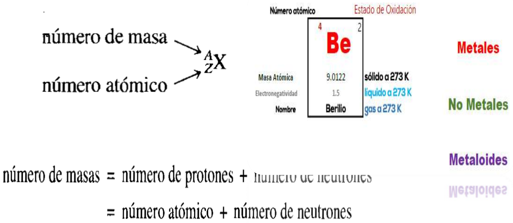

El átomo
Un átomo es la unidad constituyente más pequeña de la materia que tiene las propiedades de
un elemento químico y que puede intervenir en una combinación química. Los átomos y, por
lo tanto, toda la materia, se componen principalmente de tres partículas fundamentales:
electrones, protones y neutrones. Es esencial conocer la naturaleza y funciones de estas
partículas para comprender las relaciones químicas.
El número de protones en un átomo recibe el nombre de número atómico (Z). En un átomo, que
debe ser eléctricamente neutro, el número de electrones es igual al número de protones.
Todos los átomos de un determinado elemento tienen el mismo número atómico.
El número total de protones y neutrones de un átomo se llama número másico (A).
Este número es diferente para los isótopos de un mismo elemento. Todos los átomos que
tienen igual número atómico (Z) pero distinto número másico (A) se denominan isótopos.
Cada elemento químico se representa a través de su símbolo químico. AX Z

Partículas subatómicas.
Las partículas subatómicas se clasifican según su estabilidad y composición, lo que permite entender mejor su comportamiento y propiedades. Las más conocidas son los electrones, protones y neutrones, que se diferencian por su carga eléctrica y masa. Los electrones son partículas elementales, es decir, indivisibles y no pueden ser descompuestas en partículas más pequeñas. Por otro lado, protones y neutrones son compuestas, formadas por quarks unidos por gluones, que son partículas que llevan la fuerza nuclear fuerte. Esta clasificación es fundamental para entender la estructura y comportamiento de la materia a nivel subatómico.
Existen seis tipos de quarks: up, down, charm, strange, top y bottom. Además, igualmente, existen los fotones, que son las partículas subatómicas responsables de la interacción electromagnética; y también los neutrinos y los bosones de gauge, responsables de las fuerzas nucleares débiles. Por último, existe el bosón de Higgs, partícula que fue descubierta en 2012 y que sería la responsable de que todas las demás partículas elementales (todo lo que compone al universo) tengan masa.